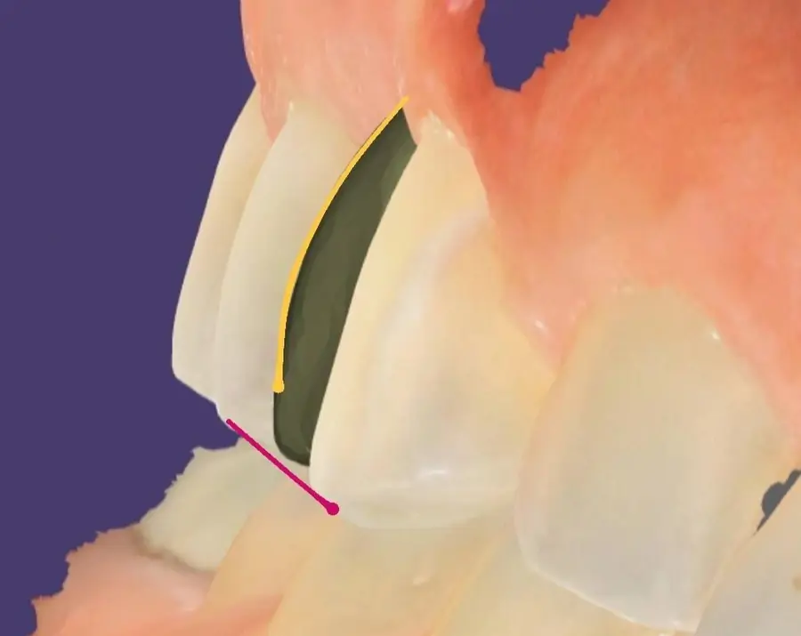
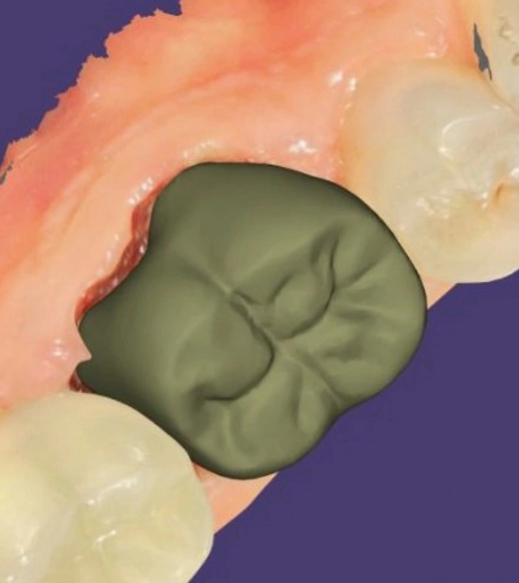

نسخه استخراجشده؛ ترجمه یا تأیید علمی انجام نشده است. وضعیت: captured
لابراتوار طراحی روکش ایمپلنت پرهمولر اول بالا را پیش از ساخت برای چک فرستاده است. روی مانیتور چیز عجیبی ندارد و اکلوژنش هم احتمالاً درست است. تأییدش میکنی؟

کنار کانین و پرهمولر دوم که نگاهش کنی، مشکل معلوم میشود:
این اتفاقی موردی نیست؛ الگویی است که مشخصاً در پرهمولر بالا بارها دیده شده و بابتش کار زیادی برگشته است. به ایمپلنت هم محدود نیست: همین کوتاهسازی پرهمولر اول در روکشهای ساختهشده به روش غیردیجیتال هم بارها تکرار میشود. اکلوژن را درست درمیآورند، اما کانتور باکال و ارتفاع کاسپ از قلم میافتد.
پرهمولر اول بالا در گوشهی لبخند است و نقطهی انتقال فرم از کانین به دندانهای خلفی. برجستگی باکال این دندان پیوستگی خط کانتور را از کانین تا مولر نگه میدارد. وقتی این برجستگی تخت و کاسپ کوتاه ساخته شود، خط بین دندان ۳ و ۵ میشکند و روکش کمحجم و فرورفته دیده میشود.
اکلوژن درست این را جبران نمیکند، چون مسئله تماس اکلوزال نیست، فرم باکال است.
استخوان بعد از کشیدن دندان تغییر کانتور میدهد و ناحیهی سرویکال دیگر شبیه وضعیت دندان طبیعی نیست. نتیجه اینکه طوق روکش ایمپلنت بهصورت پیشفرض متفاوت از دندانهای مجاور درمیآید و اگر طراح آگاهانه اصلاحش نکند، اختلاف در ناحیهی طوق باقی میماند. برای همین در این کیس خواسته شد طوق مثل پرهمولر دوم شود.
چک کردن یک فایل طراحی چند دقیقه وقت میبرد؛ برگرداندن روکش ساختهشده یعنی دوبارهسازی، جلسهی اضافه و زمان ازدسترفته برای بیمار. چون این ایراد بارها تکرار شده، به یک قاعدهی کاری تبدیل شده است: هر وقت پرهمولر بالا در کار باشد، از لابراتوار بخواه طراحی را قبل از ساخت بفرستد و کانتور باکال و ارتفاع کاسپ را کنار دندانهای مجاور چک کن.
خطایی که در مرحلهی طراحی گرفته شود، هرگز به دهان بیمار نمیرسد.
لابراتوار طراحی دیجیتال روکش مولر فک پایین را برای تأیید فرستاده است. آیا این طراحی را تأیید میکنی؟ اگر نه، ایراد آن را توضیح بده.

تأیید طراحی یعنی همین دو کار، پیش از آنکه روکش ساخته شود: تصمیم به تأیید یا رد، و اگر رد کردی، توضیح ایراد.